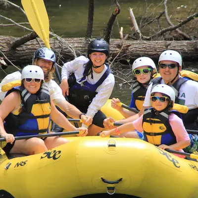
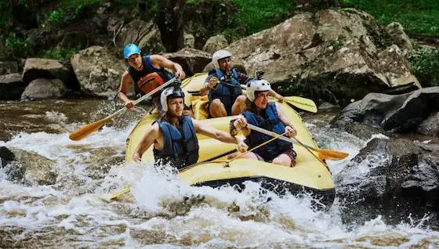
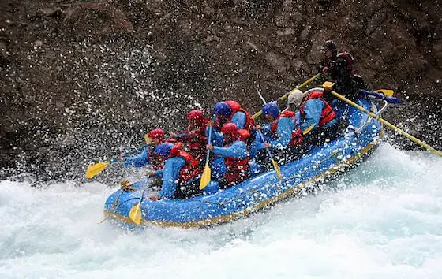

Our Rafting Trips
Whether you're a first-time rafter or a full-blown adrenaline junkie, there's a river adventure waiting for you!

Scenic Family Float
Enjoy a relaxing 2–3 hour rafting experience designed for beginners and families. The Scenic Family Float offers gentle rapids, beautiful river views, and plenty of opportunities to enjoy the outdoors together. It is a great choice for families and first-time rafters who want to experience the excitement of whitewater rafting at a comfortable pace.

River Rush Adventure
Take on a half-day rafting adventure filled with faster currents and exciting rapids. River Rush Adventure is designed for intermediate rafters who are ready for a more energetic experience on the water. Challenge yourself, work together with your group, and enjoy the thrill of navigating through rushing whitewater while surrounded by beautiful river scenery.

Extreme Rapids Expedition
For the ultimate thrill-seekers, Extreme Rapids Expedition delivers a full-day challenge through intense rapids and demanding river conditions. This advanced trip is designed for experienced rafters who are ready to push their skills and work closely with their team. Expect an action-packed adventure that combines technical rafting, powerful whitewater, and unforgettable moments on the river.
Ready for an Adventure?
Have questions about our trips or ready to plan your rafting experience? Get in touch with our team!
Contact Us| Trip | Difficulty | Duration | Price | Best For |
|---|---|---|---|---|
| Scenic Family Float | Beginner | 2–3 hours | $50 per person | Families and first-time rafters |
| River Rush Adventure | Intermediate | Half-day | $75 per person | Adventurous rafters |
| Extreme Rapids Expedition | Advanced | Full day | $100 per person | Experienced rafters |